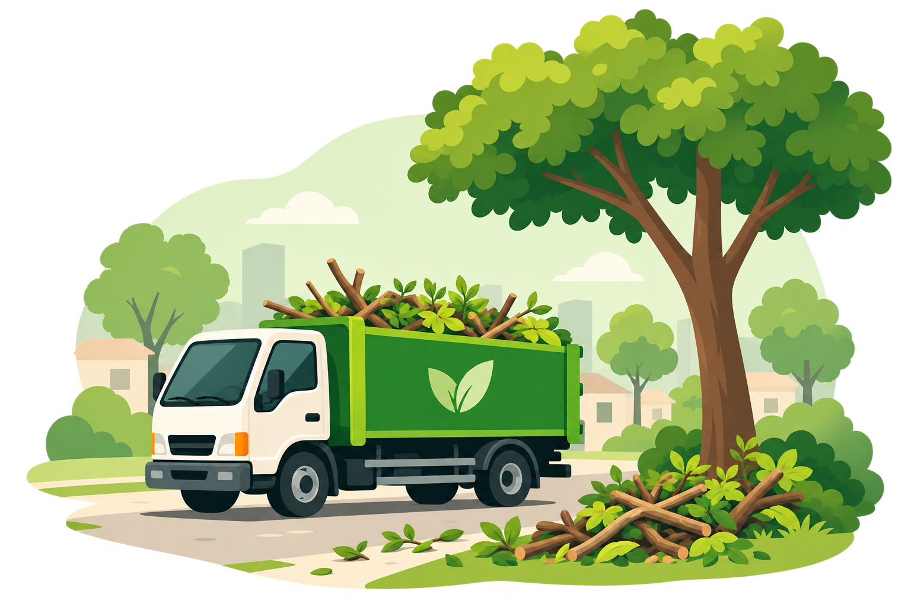

Cidade limpa, futuro verde
Bem-vindo ao EcoColeta!
O EcoColeta é um projeto que ajuda a organizar a coleta de galhos e resíduos de poda na cidade.
Nosso objetivo é facilitar a comunicação entre os moradores e a prefeitura.
Conheça o projeto
Sobre o projeto
Com o EcoColeta, os moradores poderão consultar os períodos de coleta em seus bairros.
A organização das rotas também poderá ajudar a prefeitura a economizar combustível e reduzir a circulação desnecessária de caminhões e tratores.
Participe
Solicite uma coleta
Precisa descartar galhos ou resíduos de poda?
Em breve, você poderá fazer sua solicitação por aqui.